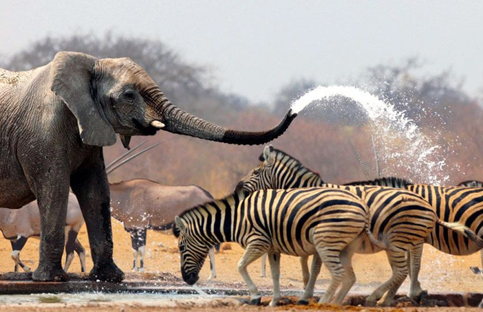
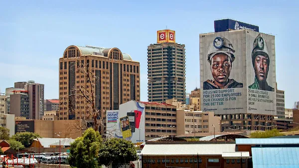
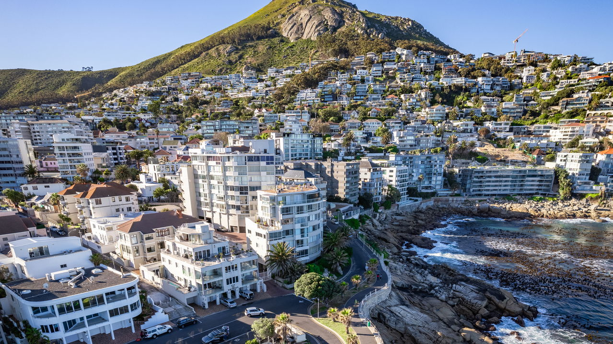

Sobre o destino
A África do Sul é um destino fascinante que combina vida selvagem, paisagens deslumbrantes e uma rica diversidade cultural, sendo perfeita para quem busca aventura e experiências únicas.
Pontos Turísticos Imperdíveis:
- Cidade do Cabo: Paisagens incríveis e a famosa Table Mountain.
- Safáris: Experiência única para ver os "Big Five".
- Kruger National Park: Um dos maiores parques de vida selvagem da África.
- Rota Jardim: Estradas com vistas espetaculares.
- Praias: Litoral com cenários paradisíacos.
Guia Rápido

Melhor época: Maio a setembro - perfeito para safáris e clima mais seco.

Como chegar: Voos internacionais chegam principalmente em Joanesburgo e Cidade do Cabo.

Idioma: Inglês e africâner - inglês é amplamente utilizado pelos turitas e moradores.

Moeda: Rand sul-africano (ZAR) - cartões são aceitos na maioria dos lugares.
Custos Médios
- Hotel: R300 - R1500 por noite
- Alimentação: R100 - R300 por refeição
- Transporte: R20 - R100 por viagem
Localização
Galeria de Fotos


